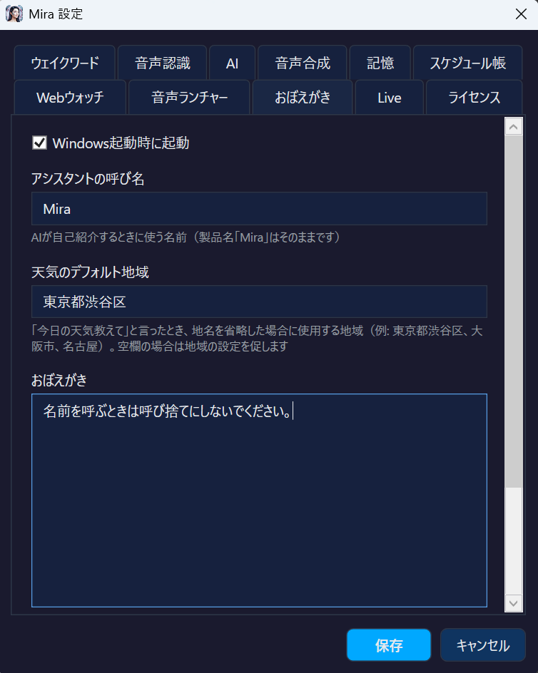

Mira Help
Comprehensive guide to all Mira features
What is Mira
Mira is an AI voice assistant for Windows 10/11. Just say "Hey Mira please" to start conversations, search the web, launch apps via Voice Launcher, analyze screens, and much more.
With Cortana discontinued, Mira is the cutting-edge voice assistant for Windows users. It works fully offline, protecting your privacy while providing powerful AI capabilities.
System Requirements
- OS: Windows 10 (64-bit) or later / Windows 11
- .NET: .NET 9.0 Desktop Runtime (bundled)
- RAM: 4GB+ (8GB+ recommended for local AI)
- Microphone: Built-in or USB microphone
- Storage: ~500MB+ (including Whisper model. Recommended large-v3-turbo: 1.6GB)
Quick Start
- Install and launch Mira. An "M" icon appears in the system tray.
- On first launch, the Whisper speech recognition model (default small: 466MB) is automatically downloaded. You can switch to the recommended large-v3-turbo (1.6GB) in Settings.
- Say "Hey Mira please". A beep sounds and an overlay appears in the bottom-right corner.
- Speak your question or command. Mira responds with AI and reads it aloud.
- Double-click the tray icon to open Settings.
Wake Word Setup
Mira can be activated with any word you choose. Change it in the "Wake Word" tab in Settings.

- Default: "Hey Mira please", "Mira onegai", "Mira shitsumon desu"
- Interrupt phrases: "Mira stop please", "Mira cancel please" to interrupt speech (longer phrases recommended to avoid false triggers)
- Register multiple phrases separated by commas
Tips to Reduce False Recognition
Background noise or speaker audio feeding back into the microphone can cause unintended wake or stop triggers. Setting longer phrases significantly reduces false recognition.
| Morae | Example | False Trigger Risk |
|---|---|---|
| 3〜4 | Stop, Cancel | ⚠️ High (frequent with ambient noise or TTS feedback) |
| 5〜6 | Mira please, Mira Cancel | ✅ Low (practical level) |
| 7+ | Mira stop please, Mira question | ✅ Very low (recommended) |
Microphone Setup NEW
Choose the microphone Mira uses on the "Wake Word" tab in Settings. The microphone you select is used for both wake word detection and voice input.
- Default: "Windows default microphone"
- The selected microphone is stored by name, so unplugging and reconnecting USB devices will not silently switch Mira to a different one
- Changes take effect as soon as you save (no restart needed)
Test Microphone
The "Test microphone" button records for 3 seconds and shows the actual input level.
| Reading | Meaning |
|---|---|
| Average | Decides whether speech recognition runs. Below the required value (0.0080), audio is discarded even if you can hear it |
| Peak | The loudest moment. Above 0.5 the audio may be clipping, which reduces recognition accuracy |
Microphone Boost
If your voice is still too quiet with the Windows microphone level at maximum, Mira can amplify the input up to 10x.
- First press "Test microphone" at x1.0 and speak at your normal distance and volume
- If the average exceeds the required value, no boost is needed
- If it falls short, raise the slider gradually until the average clears the required value while the peak stays under 0.5
AI Overview
Mira supports 7+ AI providers. Select your provider and model in the "AI" tab in Settings.
Recommended Vision Models (Tested)
The following models have been tested for Screen Vision.
| Model | Type | Vision | Chat | Features |
|---|---|---|---|---|
| Claude Haiku 5.5 | Cloud | ✅ | ◎ | Claude's default model. Fast (about 2 seconds to describe the screen), low cost, and detailed |
| Claude Opus 5.5 | Cloud | ✅ | ◎ | Top-tier model. Highly accurate, but slower (about 5 seconds) and more expensive |
| gemini-flash-latest ★ | Cloud | ✅ | ◎ | Default model. Best cost-performance, fast. Strong at both chat and vision. Free tier available |
| Gemma 4 E4B-IT ★ | Local | ✅ | ◎ | Top local pick. Fast & accurate. Full tool marker support. No API key, completely free. VRAM 6GB+ |
| Gemma 4 26B | Local | ✅ | ◎ | Higher accuracy local model. Full tool marker support. VRAM 16GB+ |
ollama pull gemma4:e4b or LM Studio: search "gemma-4-e4b-it".Ollama (Local AI)
🦙 Ollama Local Free
Run LLMs locally on your PC. No API key, fully offline, zero cost.
- Install Ollama from ollama.com
- Run
ollama pull llama3.1:8bin Command Prompt to download a model - Mira Settings → AI → Provider: Ollama, Model: llama3.1:8b
LM Studio (Local AI)
🔬 LM Studio Local Free
Manage models with a GUI. Provides OpenAI-compatible API.
- Install LM Studio from lmstudio.ai
- Download a model and start the local server (default:
http://localhost:1234/v1) - Mira Settings → AI → Provider: LM Studio
Lemonade (AMD GPU)
🍋 Lemonade Local Free
Local AI optimized for AMD GPUs.
Google Gemini
✨ Gemini Cloud Free Tier
Google's latest AI. Free tier available with a Google account. Mira's default provider.
- Get an API key from Google AI Studio (free with a Google account)
- Mira Settings → AI → Provider: Gemini, enter API key
| Model | Free Tier | Vision | Best For |
|---|---|---|---|
| gemini-3.8-flash | Yes | ✅ | Newest Flash generation. Fast and accurate |
| gemini-3.5-flash-lite | Yes | ✅ | Cheapest and lightest. Good for simple conversations |
| gemini-flash-latest ★ | Yes | ✅ | Default model. Always points to the newest Flash generation, so it follows new releases without changing the model name |
-latest: what they point to changes at Google's discretion. If response quality or behaviour suddenly shifts, pin a specific generation such as gemini-3.8-flash for stable behaviour.OpenAI
🤖 OpenAI Cloud Paid
GPT-6 family (gpt-6.1-sol / gpt-6-luna). Vision-capable. Default: gpt-6.1-sol.
Anthropic (Claude)
🎭 Anthropic Cloud Paid
Claude Haiku 5.5 / Sonnet 5.5 / Opus 5.5. High-accuracy screen vision. Default: the fast, low-cost Haiku 5.5.
Custom Endpoint
Connect to any service that provides an OpenAI-compatible API. Specify the Base URL and model name.
Speech Recognition (Whisper STT)
Mira uses Whisper.NET for local speech recognition. Audio data is never sent externally.
Choose model size in the "Speech Recognition" tab:
| Model | Size | Accuracy | Speed |
|---|---|---|---|
| small | 466MB | Low | Fast |
| medium | 1.5GB | Medium (Balanced) | Normal |
| large-v3-turbo | 1.6GB | High (Recommended). Fast + accurate | Fast |
| large-v3 | 2.9GB | Highest | Slow |
Text-to-Speech (TTS)
Mira uses a 4-tier fallback chain for TTS. If the top engine is unavailable, it automatically switches to the next.
1. AivisSpeech (localhost:10101) — Best quality Japanese 2. VOICEVOX (localhost:50021) — High quality Japanese 3. Edge TTS (Python edge-tts) — Multilingual neural voice 4. System.Speech — Always available
TTS Engine Setup
AivisSpeech
The highest quality Japanese TTS engine. Download from aivis-project.com and run on port 10101.
VOICEVOX
Alternative to AivisSpeech. Download from voicevox.hiroshiba.jp. Default port 50021.
Edge TTS
Uses Microsoft Edge neural voices. Requires internet. Uses Python edge-tts: pip install edge-tts
Emotion TTS
When using AivisSpeech, Mira automatically switches between 6 emotion styles based on the AI response:
- 😊 Normal / 😄 Happy / 😢 Sad / 😠 Angry / 😨 Fear / 😲 Surprise
Voice Command List
Mira recognizes your voice and instantly executes the commands below. Intent detection runs locally in 0ms without calling any AI, so it's extremely fast. Any utterance that doesn't match a command is processed as a normal AI conversation.
Screen Vision
AI captures and analyzes your screen. Requires a Vision-capable AI provider.
| Example | English |
|---|---|
| "Look at the screen" / "What's on my screen?" | "What's on screen?" / "Look at the screen" |
| "Describe the screen" / "Tell me what's on screen" | "Describe the screen" |
| "Take a screenshot" / "Screenshot" | "Screenshot" / "Capture screen" |
| "What is this error?" / "Explain this dialog" | "What is this error?" |
| "Read what's displayed on screen" | "Read the screen" |
Search & Weather
Get web search results and weather information by voice. Results are read aloud by AI.
| Category | Example | English |
|---|---|---|
| Web Search (DuckDuckGo) | "Search for X" / "Look up X" "What is X?" | "Search for ..." / "Look up ..." "What is ...?" / "Who is ...?" |
| Web Search (What is) | "What is X?" / "What are X?" | "What is ...?" / "Find ..." |
| Browser Search (Google) | "Google X" | "Google ..." |
| Weather | "What's the weather?" / "Weather in Tokyo" "Tomorrow's temperature" | "Weather" / "Forecast" "Temperature in ..." |
Web Watch NEW
Register frequently-checked web pages with keywords and get their content fetched and summarized by voice. Set up keyword-URL pairs in the "Web Watch" tab in Settings.
| Category | Example | Action |
|---|---|---|
| Fetch Content (AI Summary) | "Tell me the latest news" "What's the weather forecast?" "How are the stocks?" | Fetches page content from registered URL, AI summarizes and reads aloud |
| Open in Browser | "Show me the latest news" "Open the weather forecast" | Opens registered URL directly in browser |
https://news.yahoo.co.jp/. Say "Tell me the latest news" and AI will summarize Yahoo News articles. Say "Show me the latest news" to open the page in your browser. Keywords use partial matching, so they don't need to match exactly.Voice Launcher
Register keyword-command pairs in the "Voice Launcher" tab in Settings. When your speech contains a registered keyword, the corresponding app or URL is launched.
| Example | Registered Keyword | Action |
|---|---|---|
| "Open Chrome" | Chrome | Executes registered command (e.g., chrome.exe) |
| "Launch Notepad" | Notepad | Multiple keywords per command (comma-separated) |
| "Open Gmail" | Gmail | Register a URL to open in browser |
C:\Program Files\...\app.exe) or URLs (e.g., https://mail.google.com).System Operations
Control volume, clipboard, date/time, and other system functions.
| Category | Example | English |
|---|---|---|
| Volume | "Set volume to 50" / "Volume up" "What's the volume?" | "Set volume to ..." / "Volume up/down" |
| Mute | "Mute" / "Unmute" | "Mute" / "Unmute" |
| Clipboard (Read) | "Read clipboard" / "What's in the clipboard?" | "Read clipboard" / "Show clipboard" |
| Clipboard (Write) | "Copy X to clipboard" | "Copy ..." |
| Time | "What time is it?" / "Current time" | "What time is it?" |
| Date | "What day is it?" / "What's the date?" "Today's date" | "What day is it?" / "What's the date?" |
Timers & Alarms
Set and manage countdown timers and alarms by voice.
| Category | Example | English |
|---|---|---|
| Set Timer | "Set a 3 minute timer" "Timer for 5 minutes" | "Set a ... timer" / "Timer for ..." "Start a 30 second timer" |
| Cancel Timer | "Cancel timer" / "Stop timer" | "Cancel timer" |
| List Timers | "Any timers?" / "List timers" | "Any timers?" |
| Set Alarm | "Set alarm for 7 AM" "Wake me up at 2:30 PM" | "Set alarm for ..." / "Wake me up at ..." "Remind me at ..." |
| Cancel Alarm | "Cancel alarm" / "Stop alarm" "Clear alarms" | "Cancel alarm" / "Delete alarm" |
| List Alarms | "Any alarms set?" / "List alarms" "What alarms?" | "List alarms" / "Show alarms" |
Stored at: %LOCALAPPDATA%\Mira\alarms.json
Memory & Schedule
Mira automatically remembers important information from conversations. Say "Remember this" to explicitly save memories.
| Category | Example | English |
|---|---|---|
| Memory (Auto) | AI automatically extracts and saves important facts. Pin 📌 for permanent storage. | |
| Forget One | "Forget X" / "Forget about X" | "Forget ..." / "Forget about ..." |
| Forget All | "Forget everything" / "Clear memory" "Reset memory" | "Forget everything" / "Clear all memories" |
| List Schedule | "What's my schedule?" / "List schedule" "Any appointments?" | "What's my schedule?" / "Show schedule" |
| Add Schedule | "Schedule a dentist appointment on April 10th" "Meeting tomorrow at 3pm" | "Add schedule..." / "Schedule..." |
| Delete Schedule | "Delete the dentist appointment" "Remove the April 10th schedule" | "Delete schedule..." / "Remove schedule..." |
Stored at: %LOCALAPPDATA%\Mira\memory.json, schedules.json
Screen Vision
AI captures and analyzes your screen. See Screen Vision commands for voice command details.
Recommended providers: gemini-flash-latest (free tier available), Claude Haiku 5.5, Gemma 4 E4B-IT / 26B (local, free)
Gemini Live
Real-time voice dialogue mode using Google's Gemini Live API. STT + LLM + TTS integrated into a single WebSocket for natural conversation.
- Dedicated wake phrase: "Mira Live" to activate (separate from regular wake words)
- Stop phrase for instant termination (pausing from the tray also ends it)
- Enable in the "Live" tab in Settings
- Model: gemini-3.8-live (changeable in the "Live" tab in Settings)
- Language (listening & replies): choose Japanese, English or auto-detect. The default is Match Windows language (auto-detect when Windows uses a language other than Japanese or English). With a language set, replies are in that language and short phrases are less often mistaken for another language
- The microphone is not sent while Mira is speaking or using a tool (so it doesn't pick up its own voice from the speakers). You can't interrupt by voice mid-sentence, but the stop phrase still ends Live mode
- Screen Capture (off by default for new installs from v2.3.1): when turned on in the "Live" tab, the AI looks at your screen when you ask. Screenshots are sent to Google. As this relies on the AI's judgment, it may occasionally look without being asked
Custom Notes
Write additional instructions for Mira in Settings. Example: "Search Yahoo Weather when asked about weather" / "Use polite language"
Web Watch Setup NEW
Register keyword-URL pairs in the "Web Watch" tab in Settings.
- Open Settings (double-click Mira tray icon → "Settings" button)
- Select the "Web Watch" tab
- Enter a keyword you'll use in voice commands (e.g., "latest news")
- Enter the URL of the page to fetch (e.g.,
https://news.yahoo.co.jp/) - Click "Add"
- Click "Save" to save settings (Cancel to discard)
Voice Launcher Setup
Register keyword-command pairs in the "Voice Launcher" tab in Settings. Launch apps and websites using voice commands that contain registered keywords.
- Open Settings (double-click Mira tray icon → "Settings" button)
- Select the "Voice Launcher" tab
- Enter keywords you'll use in voice commands (e.g., "Chrome"). Comma-separated for multiple keywords
- Enter the executable path or URL (e.g.,
chrome.exeorhttps://mail.google.com) - Click "Add"
- Click "Save" to save settings
.exe or .bat path to launch an app, or a URL starting with https:// to open in browser. Executables in PATH (e.g., notepad.exe, calc.exe) need only the filename.Theme
Switch between Dark / Light theme in Settings.
Startup Settings
Enable "Start minimized" to launch Mira directly to the system tray without showing a window.
License
Mira is 100% free software. No license key or trial period required. All features are available without any restrictions.
FAQ
Q: Speech recognition accuracy is low / too many misrecognitions
Try switching to a more accurate model in the "Speech Recognition" tab in Settings.
- small (default, 466MB): Fast but lower accuracy
- large-v3-turbo (1.6GB, recommended): Fast + accurate. Best balance
- large-v3 (2.9GB): Highest accuracy but slow. For high-spec PCs
Q: Mira responds even when I didn't call it
Short wake words can be accidentally triggered by ambient noise or TV audio. Try these solutions:
- Use a longer wake word: "Mira" → "Hey Mira please", "Mira question" — 5+ syllables recommended
- Longer stop phrase too: "Stop" → "Mira stop please" to prevent false stops
- If your mic and speakers are close, Mira's own voice may feed back. Using a headset can help
Q: Web Watch isn't working properly
Check the following:
- Try different keywords: Change to words that are reliably recognized. E.g., if "news" is misrecognized, try "latest news"
- Register multiple keywords: Use comma-separated keywords like "news, latest news" to increase match rate
- Verify the URL: Open the URL directly in a browser to make sure it loads content
- Check AI provider is configured: The summary feature requires an AI provider
Q: Voice Launcher doesn't launch apps
Check the following:
- Is the keyword recognized correctly?: Check the actual recognized text in the log (Settings → "Log" tab)
- Is the command path correct?: Use a full path or a command that's in your system PATH
- Include launch verbs like "open", "launch", "start" along with the keyword
Q: Screen Vision doesn't work
You need a Vision-capable AI provider. Set up one of the following:
- gemini-flash-latest (recommended, free tier available)
- Claude Haiku 5.5 / Sonnet 5.5 / Opus 5.5 (high accuracy)
- Ollama (or LM Studio) + Gemma 4 E4B-IT / 26B (local, free)
Q: Mira asks me to set my location when I ask about weather
Enter your location in the "Default Weather Location" field in the "AI" tab in Settings (e.g., "Tokyo", "Osaka", "New York"). When you say "What's the weather?", this location's weather will be returned. If empty, Mira will ask you to set it.
Q: AI responses are slow
Try the following:
- Use a cloud API: Gemini Flash has a free tier and is fast (daily limits vary by model)
- For local: Switch to a smaller model (e.g., gemma3:4b) or enable GPU acceleration
- Lemonade (AMD NPU): Fast inference via Lemonade on AMD Ryzen AI PCs
Q: Can I use Mira without internet?
Yes. Use Ollama (AI) + Whisper (STT) + AivisSpeech/VOICEVOX (TTS) for fully offline operation.
Q: What data does Mira send?
Zero with local providers. With cloud providers, only transcribed text is sent to the API. See our Privacy Policy.
Q: Do I need to install VOICEVOX / AivisSpeech separately?
Yes. These are separate software. They must be installed and running. Without them, Mira falls back to System.Speech.
Q: Are there any free AI providers?
Yes. The following are available for free:
- Gemini Flash: Free tier available; daily limits vary by model and may change (API key setup guided in first-run wizard)
- Ollama: Completely free local AI. Just install on your PC
- LM Studio: Local AI similar to Ollama. Easy GUI interface
Q: How to disable the memory feature
Say "Forget everything" or "Clear memory" to delete all saved memories. There's no setting to disable the memory feature entirely, but you can delete individual memories by saying "Forget [topic]".
Troubleshooting
Wake word not responding
First, check that the right microphone is selected. This is by far the most common cause when Mira does not respond at all.
- Open Settings → "Wake Word" tab
- Select the microphone you actually use under "Microphone"
- Press "Test microphone", speak at your normal distance, and check that the average clears the required value
- If it falls short, raise "Microphone boost" or move closer (see Microphone Setup)
If that does not help:
- Check if microphone is muted
- Check Windows microphone permission (Settings → Privacy → Microphone)
- Check whether Mira is paused (grey tray icon). It is orange when running and blue while listening
No TTS audio output
- Check if speakers are muted
- Check if AivisSpeech / VOICEVOX is running
- Check TTS engine priority in Settings
AI not responding
- Check if AI provider is correctly configured in Settings
- For Ollama: run
ollama listto verify model is installed - For cloud providers: verify API key is correct
Support
For questions or bug reports, please contact support@mojosoft.biz.